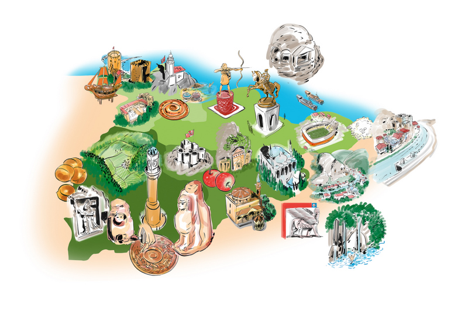

<H1>marmara BÖLGESÝ HAYVANCILIK</H1>
Hayvancýlýk
Bölgede hayvancýlýk büyük ölçüde þeklindedir. Ahýr hayvancýlýðýnýn geliþmesinde, tüketici nüfusun fazlalýðý ve pazarlama sorununun çözülmüþ olmasý gösterilebilir. Bununla beraber bölgede yer þekillerinin ve iklim þartlarýnýn elveriþliliði de etkilidir. Bölgede makineli tarýmýn yaygýn olmasý mera ve otlaklarýn daralmasýna yol açmýþtýr.

Bölgede ahýr hayvancýlýðýnýn yanýnda mera hayvancýlýðý da yaygýndýr. Yýldýz Daðlarý çevresi ile Tekirdað, Balýkesir ve Çanakkale dolayýnda mera hayvancýlýðý yaygýndýr.

Ýstanbul ve çevresinde Bursa , Gemlik, Bilecik çevresinde ipekböcekçiliði yapýlmaktadýr. Ayrýca özellikle boðazlarda balýkçýlýk yoðun olarak yapýlmaktadýr. Balýklar mevsime göre sýcak denizlerden soðuk denizlere, soðuk denizlerden sýcak denizlere göçerler. Bu göçlerin yapýldýðý boðazlar balýkçýlýða elveriþli alanlarý oluþturur.

